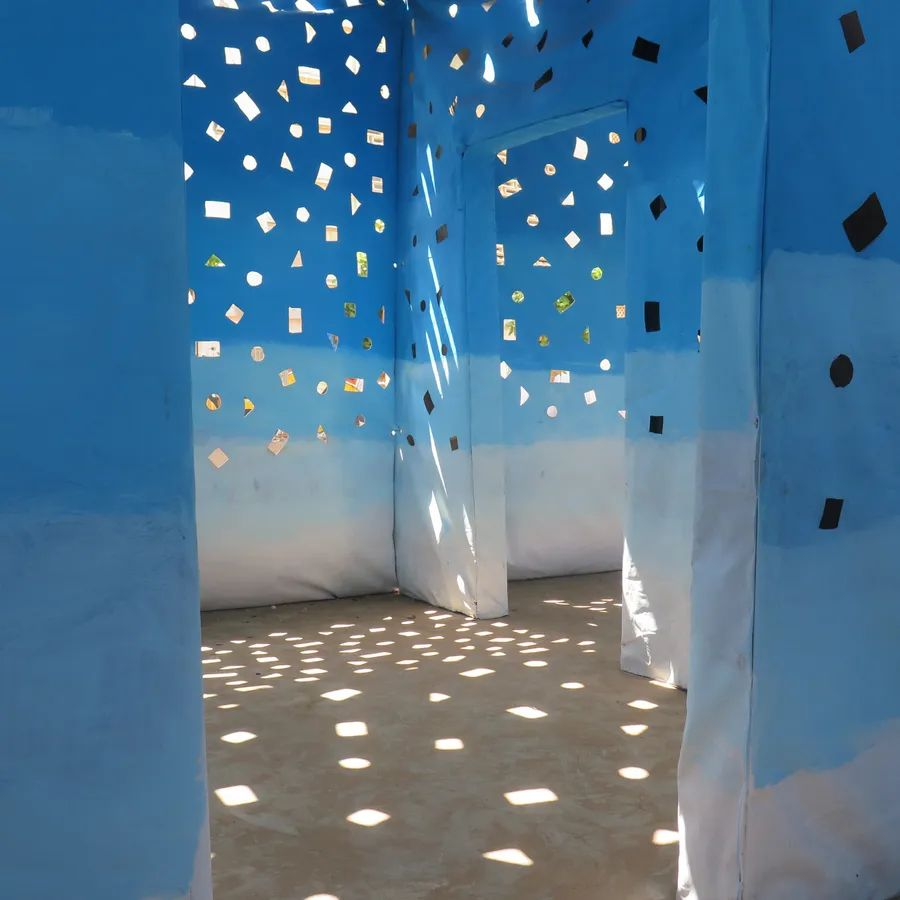
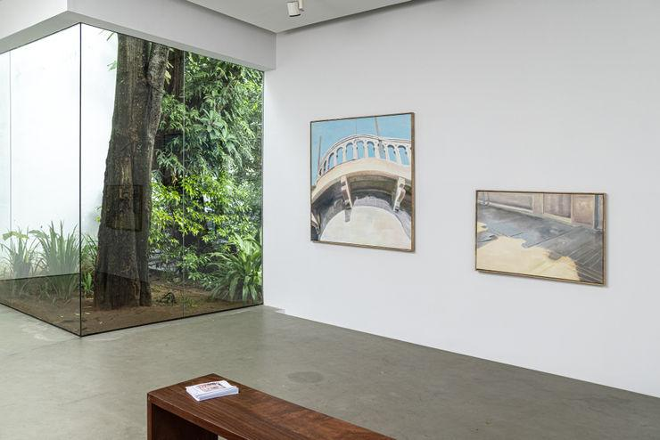

L’œuvre de Cheikh Ndiaye est guidée par un regard singulier à l’informel qui est pour lui au fondement de toute sa pratique artistique. Tiré de la zone létale, l’objet ancien est ramené à la vie. Les choses reviennent à leur plénitude matérielle et se projettent vers un nouvel imaginaire.
L’univers de Cheikh Ndiaye se fait l’écho constant de l’origine de ses recherches, la rue. Les vues peintes créent des ouvertures et semblent traverser le mur opaque, dense et imposant, fait de béton brut. Les objets du quotidien quant à eux nous renvoient à un réel tangible et établi, quand bien même ils paraissent se balancer entre des sphères hétérogènes et des espaces lointains. L’ordre des choses à travers des formes visibles ou dissimulées se réinvente continuellement jusqu’à ses marges.
L’unité du travail de Cheikh Ndiaye tient à son utilisation de la matière, à la reconnaissance de sa pluralité. Il matérialise l’idée de la porosité des substances dans des rapports d’altérité, et propose une conception de l’effritement comme mouvement de résistance à l’oubli.
" L'œuvre de Ndiaye réhabi(li)te non seulement des interstices architecturales, mais aussi ceux entre la matérialité de la peinture et le concept, l'image et l'installation, l'anthropologie et l'art. Ses tableaux, par exemple, sont d'étranges contenants, qui malgré leur réalisme apparent laissent le spectateur dans l'incertitude, comme si leur picturalité faisait référence à quelque chose dans la matière qui n'est pas immédiatement visible. Dans ses installations, l'artiste prend la posture des bricoleurs que l'on trouve dans ses peintures. La récupération des objets liés à une économie informelle apparaît chez Ndiaye comme une pratique positive, une sorte de réparation de la société. Il fait sienne cette pratique du rafistolage des tôles froissées issues de l'informel et opère une sorte de rite de réconciliation entre la cassure et la réparation, entre la blessure et le pansement, la manifestation et l'assomption. " Jana Beránková (Writer/Art critic at Art Margins
Expositions à la galerie

Abidjan